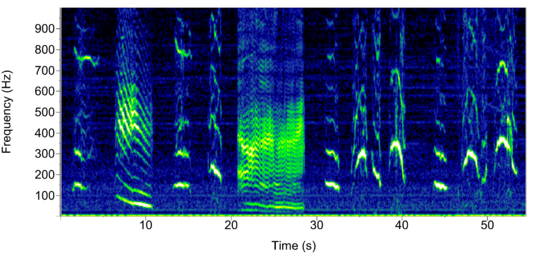
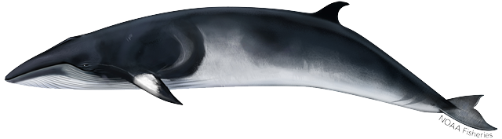

Baleen Whales
Baleen whales (Mysticetes) consist of some of the largest marine mammals in the world. Although they do not echolocate like their odontocete relatives, they still produce a complex variety of sounds to communicate (and in some cases, to navigate). As larger species, baleen vocalizations tend to be low frequency and propogate far distances. Recent research has hypothesized that these properties additionally help baleen species evade predators such as killer whales, which can’t hear such low frequency sounds.
Larger cetacean species produce longer wavelength vocalizations at lower frequencies. Sounds with longer wavelengths travel further in the ocean, allowing for long-distance communication (see right diagram).
The following is a list of Mysticete species monitored by NEFSC Passive Acoustic Branch. Call types that are frequently used to detect specific acoustic events are listed under each species. Reference this link to access full acoustic event guides for each species. Acoustic guides are also linked for each species below.
This is not meant to be comprehensive of all balaenidae repertoire’s.
Blue whale
Scientific name: Balaenoptera musculus
Makara species code: BLWH
Blue whales typically produce pulses, grunts, groans, and moans. These are low-frequency calls, generally in the range of 15-40 Hz and are difficult to hear. Blue whale calls may be more audible if sped up by a factor of 2, 3 or more.
In general, blue whales in the North Atlantic will produce three main sound types: songs with a variety of regularly repeated, relatively long song units (i.e., A-B-AB song), shorter down sweeping calls (i.e., D calls) that they produce irregularly and in pattern, and arch calls. A-B-AB songs consist of units, each lasting 15-20 s in the 19-16 Hz range. Usually the A calls are shorter and flatter, while the B calls are typically longer and slope downward. Calls can be produced as single calls or combined into A, B, or AB phrases which can be repeated to form bouts of song. Song types vary by geographic populations.
| Call Types | Makara call-type code | ||||
|---|---|---|---|---|---|
| A/B/AB song | BLSONG | ||||
| Arch/D call | BLARCH | ||||
| Mixed calls | BLMIX |
Spectrogram image of Blue whale A/B/AB song
While there are multiple call types described in this guide, the NEFSC Passive Acoustics Branch only uses A, B, and AB call types for determining daily presence of blue whales in our archival data.
Fin whale
Scientific name: Balaenoptera physalus
Makara species code: FIWH
Fin whales can produce a variety of low frequency sounds, some of which reach intensities as loud as 184-186 dB re 1 mPa (Charif et al., 2002; Richardson et al., 1995). Song patterns can be unique to fin whales in certain regions and can be used to identify different populations.
The most common fin whale calls are the 20-Hz pulse (also called “A notes” or “20-Hz notes”). These are stereotypes, frequency-modulated downsweeps, the most common of which has a dominant frequency of 25-17 Hz, usually centered around 20-Hz with an average duration of 1s (Morano et al., 2012). The inter-note interval (INI) can vary seasonally in the western North Atlantic with shorter INIs (~9.6s) occurring primarily in September-January, longer INIs (~15.2 s) occuring in March-May, and a transitional period occurring in February and June-August when the INI can vary (Morano et al., 2012).
Fin whales also produce back-beat pulses (also called “B notes”). These have a narrower bandwidth: 18-20 Hz (Clark et al., 2002), and are produced in a series or rotation with 20 Hz pulses.
130 Hz calls have been documented both during songs and on their own, which is a higher upsweep frequency note at about 130 Hz (Papale et al., 2023). A study on Fin whale occurrence and acoustic patterns in Norway concluded these calls were most frequent during October and November months.
40-Hz calls/downsweeps are characterized by higher frequency, down sweeping pulses of 70-30 Hz (Wiggins & Hildebrand, 2020). These have been occasionally observed but not yet documented in the literature for the North Atlantic. 40-Hz calls may function in a feeding context; these calls have been recorded in known feeding areas with whales engaged in long dives or surface feeding activities. Call rates generally increase with increasing prey biomass (Romagosa et al., 2021).
| Call Types | Makara call-type code | ||||
|---|---|---|---|---|---|
| 130-Hz note | FWNOTE | ||||
| 20-Hz pulse | FWPLS | ||||
| Downsweep/ 40-Hz call | FWDS | ||||
| Mixed calls | FWMIX |
Spectrogram image of Fin whale 20-Hz pulse calls
While there are multiple call types described in this guide, the NEFSC Passive Acoustics Branch only uses 20-Hz pulses for determining daily presence of fin whales in our archival data.
Humpback whale
Scientific name: Megaptera novaeangliae
Makara species code: HUWH
Humpback whales are known for producing complex, repeating sequences of vocalizations, commonly known as “songs”. Songs are produced by males on breeding grounds, but can also occur on feeding grounds. While the purpose of song production is still under debate, it is hypothesized that song may function as male breeding displays, male-male social ordering, or a means for spacing reproductively active males (Darling & Berube, 2001). Song can also occur on feeding grounds (Clark & Clapham, 2004).
Humpback songs can contain both tonal and impulsive sounds. Each individual sound is considered to be a “unit”, multiple units together make up a “phrase”, and “phrases that are repeated make up a”theme” (Payne & McVay, 1971). Song themes can change from year to year; some themes may stay the same while others might develop variations or be completley replaced. Humpback whales of both sexes also produce non-song vocalizations, termed ‘social sounds’ by Payne (1978) and Tyack (1982). These generally refer to any sounds that are not part of a song pattern, and have been associated with a range of behaviors such as feeding.
| Call Types | Makara call-type code | ||||
|---|---|---|---|---|---|
| Social | HWSOC | ||||
| Song | HWSONG | ||||
| Mixed call | HWMIX |
 Humpback social calls
While song and non-song are both described in this guide, the NEFSC Passive Acoustics Branch only uses calls that are obviously part of a song pattern for determining daily presence of humpback whales in our archival data.
Humpback song - 2021
Minke whale
Scientific name: Balaenoptera acutorostrata
Makara species code: MIWH
The information published on minke whale vocalizations is currently limited. In the Southern and Pacific oceans they make a variety of low- and mid-frequency calls, but the most frequent vocalization observed in the Atlantic Ocean are low-frequency pulse trains.

Minke whale pulse trains are stereotyped, 50-500 Hz thumps or pulses, each lasting ~0.5-0.7 s. Pulse trains can last 40-60 s and occur every 6-14 minutes in bouts that can last up to several hours. Some pulse trains have pulses that remain at a constant interpulse interval (IPI), while other pulse trains show a slight but abrupt slow-down impulses and lengthening of IPI approximately halfway through the pulse train (Risch et al., 2013; see figure below). There are also speed-up pulse trains that show the reverse trend with decreasing IPIs toward the end of the pulse train. Minkes are also known to create variations of pulse trains, with seasonal variation in pulse train length and IPIs.
| Call Types | Makara call-type code | ||||
|---|---|---|---|---|---|
| Pulse train | MWPT | ||||
| Pulse train speed-up | MWPTSU | ||||
| Pulse train slow-down | MWPTSD | ||||
| Pulse train constant | MWPTC |
While there are other minke whale call types described in the literature for other populations, the NEFSC Passive Acoustics Branch only uses pulse trains for determining daily presence of minke whales in our archival data collected in the western North Atlantic.
North Atlantic right whale
Scientific name: Eubalaena glacialis
Makara species code: RIWH
North Atlantic right whales (NARWs) produce a variety of low-frequency sounds including moans, screams, upcalls, and gunshots. Most of their vocalizations have acoustic energy below 500 Hz (DOSITS, 2021), but some vocalizations such as impulsive gunshot sounds produced by males can reach nearly 22 kHz (Parks & Tyack, 2005). Upcalls are the most common call types used to identify NARW presence as it is produced by all ages and sexes, and found throughout their range.
NARW Upcalls are sterotyped, frequency-modulated upcalls, resembling a checkmark shape or upsweep with a frequency range of ~100-300 Hz and a duration of ~0.6-1.3s. These are described as contact calls as they seem to function as a way of whales to find each other (DOSITS, 2021). Upcalls are the most common means of determining right whale presence from acoustic data.
| Call Types | Makara call-type code | ||||
|---|---|---|---|---|---|
| Gunshot | NARWGUNSHOT | ||||
| Moan | NARWMOAN | ||||
| Upcall | NARWUPCALL | ||||
| Downcall | NARWDC | ||||
| Scream | NARWHSCREAM |
Spectrogram image of North Atlantic Right Whale upcalls
While there are multiple call types described in this guide, the NEFSC Passive Acoustics Branch only uses upcalls for determining daily presence of North Atlantic right whales in our archival data.
Sei whale
Scientific name: Balaenoptera borealis
Makara species code: SEWH
The information published on sei whale vocalizations is currently limited. In the Southern Ocean they make low- and mid-frequency calls, but the most frequent call observed in the Atlantic Ocean is the low-frequency downsweep. Sei whale song has also been recorded with a wider variation of low-frequency downsweeps.
Downsweep calls may occur as single calls (i.e., singlets), doublets, or triplets. Stereotypes, frequency-modulated 82-34 Hz downsweeps have an average duration of 1.4 s, and the average interval between the start of the first call and start of the second call in doublet or triplet form is ~3.5s (Baumgartner et al., 2008). Sei songs are patterned, low-frequency downsweeps which were recently documented in the western North Atlantic with 50-30 Hz triplet and singlet downsweep vocalizations with duration in the 0.6-1.94s range. These were closely associated with the previously documented 82-34 Hz sei whale downsweeps (Tremblay et al., 2018).
| Call Types | Makara call-type code | ||||
|---|---|---|---|---|---|
| 30-80 Hz Downsweep | SWDS |
Spectrogram image of Sei Whale downsweep
While there are multiple call types described in this guide, the NEFSC Passive Acoustics Branch only uses downsweep doublets and triplets for determining daily presence of sei whales in our archival data.
Sources
Aulich, M., McCauley, R., Saunders, B., & Parsons, M. (2019). Fin whale (Balaenoptera physalus) migration in Australian waters using passive acoustic monitoring. Scientific Reports. 9.
Balcazar, N. E., Klinck, H., Nieukirk, S. L., Mellinger, D. K., Klinck, K., Dziak, R. P., & Rogers, T. L. (2017). Using calls as an indicator for Antarctic blue whale occurrence and distribution across the southwest Pacific and southeast Indian Oceans. Marine Mammal Science, 33(1), 172–186. https://doi.org/10.1111/mms.12373
Baumgartner, M. F., & Fratantoni, D. M. (2008). Diel periodicity in both sei whale vocalization rates and the vertical migration of their copepod prey observed from ocean gliders. Limnology and Oceanography, 53, 2197–2209. https://doi.org/10.4319/lo.2008.53.5_part_2.2197
Baumgartner, M. F., Van Parijs, S. M., Wenzel, F. W., Tremblay, C. J., Carter Esch, H., & Warde, A. M. (2008). Low frequency vocalizations attributed to sei whales (Balaenoptera borealis). The Journal of the Acoustical Society of America, 124(2), 1339–1349. https://doi.org/10.1121/1.2945155
Blue Whale. (2021). Discovery of Sound in the Sea (DOSITS). Retrieved April 20, 2023 from https://dosits.org/galleries/audio-gallery/marine-mammals/baleen-whales/blue-whale/.
Charif, R. A., Mellinger, D. K., Dunsmore, K. J., Fristrup, K. M. & Clark, C. W. (2002). Estimated source levels of fin whale (Balaenoptera physalus) vocalizations: adjustments for surface interference. Marine Mammal Science, 18, 81–98.
Cholewiak, D. M., Sousa-Lima, R. S., & Cerchio, S. (2013). Humpback whale song hierarchical structure: Historical context and discussion of current classification issues. Marine Mammal Science, 9(3): E312–E332. https://doi.org/10.1111/mms.12005
Clark, C. W., & Clapham, P. J. (2004). Acoustic monitoring on a humpback whale (Megaptera novaeangliae) feeding ground shows continual singing into late spring. Proceedings of the Royal Society B: Biological Sciences, 271(1543), 1051–1057. https://doi.org/10.1098/rspb.2004.2699
Clark, C. W., Borsani, J. F., & Notarbartolo-Di-Sciara, G. (2002). Vocal activity of fin whales, Balaenoptera physalus, in the Ligurian Sea. Marine Mammal Science, 18, 286–295.
Darling, J. D., & Berube, M. (2001). Interactions of singing humpback whales with other males. Marine Mammal Science, 17(3), 570–584. https://doi.org/10.1111/j.1748-7692.2001.tb01005.x
Lewis, L. A., Calambokidis, J., Stimpert, A. K., Fahlbusch, J., Friedlaender, A. S., McKenna, M. F., Mesnick, S. L., Oleson, E. M., Southall, B. L., Szesciorka, A. R., & Širović, A. (2018). Context-dependent variability in blue whale acoustic behaviour. Royal Society Open Science, 5(8), 180241. https://doi.org/10.1098/rsos.180241
Mellinger, D. K., & Clark, C. W. (2003). Blue whale (Balaenoptera musculus) sounds from the North Atlantic. The Journal of the Acoustical Society of America, 114(2), 1108–1119. https://doi.org/10.1121/1.1593066
Minke Whale. (2021). Discovery of Sound in the Sea (DOSITS). Retrieved April 20, 2023 from https://dosits.org/galleries/audio-gallery/marine-mammals/baleen-whales/minke-whales/.
Morano, J. L., Salisbury, D. P., Rice, A. N., Conklin, K. L., Falk, K. L., & Clark, C. W. (2012). Seasonal and geographical patterns of fin whale song in the western North Atlantic Ocean. The Journal of the Acoustical Society of America, 132(2), 1207–1212.
North Atlantic Right Whale. (2021). Discovery of Sound in the Sea (DOSITS). Retrieved April 20, 2023 from https://dosits.org/galleries/audio-gallery/marine-mammals/baleen-whales/north-atlantic-right-whale/.
Papale, E., Pelagatti, M., Pedrazzi, G. et al. Occurrence and patterns of fin whale songs reveal alternative migration strategies in Svalbard Islands, Norway. Sci Rep 13, 4436 (2023). https://doi.org/10.1038/s41598-023-31665-x
Parks, S. E., & Tyack, P. L. (2005). Sound production by North Atlantic right whales (Eubalaena glacialis) in surface active groups. The Journal of the Acoustical Society of America, 117(5), 3297–3306. https://doi.org/10.1121/1.1882946
Payne, R. (1978). Behavior and vocalizations of humpback whales (Megaptera sp.). Pages 56-78 in K. S. Norris and R. R. Reeves, eds. Report on a workshop on problems related to humpback whales (Megaptera noveangliae) in Hawai’i. NTIS, PB-280 794, Report no. MMC-77/03.
Payne, R. S., & McVay, S. (1971). Songs of Humpback Whales. Science, 173, 585-597. Tyack, P. L. (1982). Humpback whales respond to sounds of their neighbours. Ph.D. thesis, The Rockerfeller University, New York, NY. 576 pp.
Richardson, W. J., Greene, C. R., Malme, C. I. & Thomson, D. H. Marine Mammals and Noise (Academic, New York, 1995).
Risch, D., Clark, C., Dugan, P., Popescu, M., Siebert, U., & Van Parijs, S. (2013). Minke whale acoustic behavior and multi-year seasonal and diel vocalization patterns in Massachusetts Bay, USA. Marine Ecology Progress Series, 489, 279-295. https://doi.org/10.3354/meps10426
Romagosa, M., Pérez-Jorge, S., Cascão, I., Mouriño, H., Lehodey, P., Pereira, A., Marques, T. A., Matias, L., & Silva, M. A. (2021). Food talk: 40-Hz fin whale calls are associated with prey biomass. Proceedings of the Royal Society B: Biological Sciences, 288(1954), 20211156. https://doi.org/10.1098/rspb.2021.1156
Tremblay, C. J., Van Parijs, S. M., & Cholewiak, D. (2019). 50 to 30-Hz triplet and singlet down sweep vocalizations produced by sei whales (Balaenoptera borealis) in the western North Atlantic Ocean. The Journal of the Acoustical Society of America, 145(6), 3351-3358. https://doi.org/10.1121/1.5110713
Wiggins, S. M., & Hildebrand, J. A. (2020). Fin whale 40‐Hz calling behavior studied with an acoustic tracking array. Marine Mammal Science, 36(3), 964–971. https://doi.org/10.1111/mms.12680